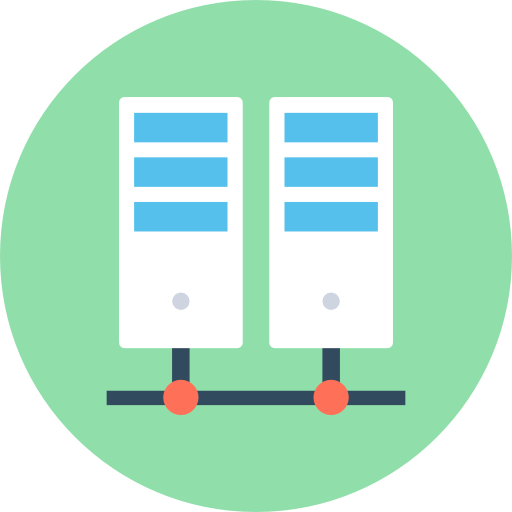
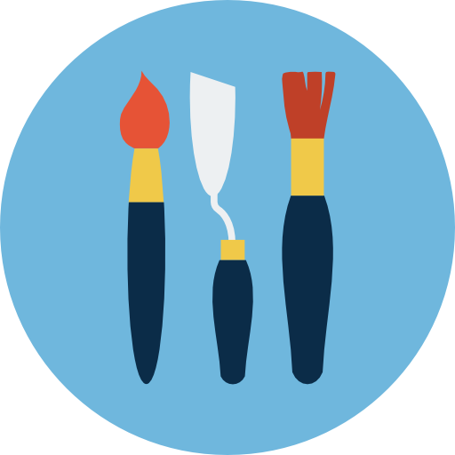
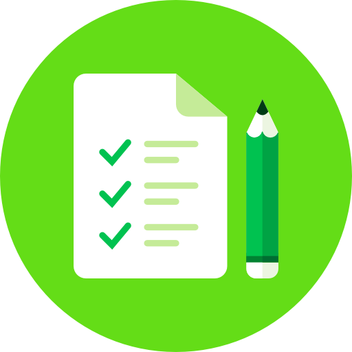

Complete toolset for productive web development

Web Server
Fast, flexible, non-blocking HTTP and WebSockets servers.

Flax View Templates
Familiar HTML based and fast (compiled fast!) view templates.
Powerful Routing
With optional strong typed params, lambdas or full Controller dispatch.
Flexible and secure database access
SearchLight ORM
Build DB agnostic web apps with SearchLight, Genie's powerful and expressive ORM.

Database migrations
Stress-free DB versioning in pure SQL with SearchLight's migrations tools.

Model validations
Guaranteed data integrity with pure Julia model validations.